Rewiring the 5G Data Plane: XDP/eBPF in the Fast Lane of UPF¶
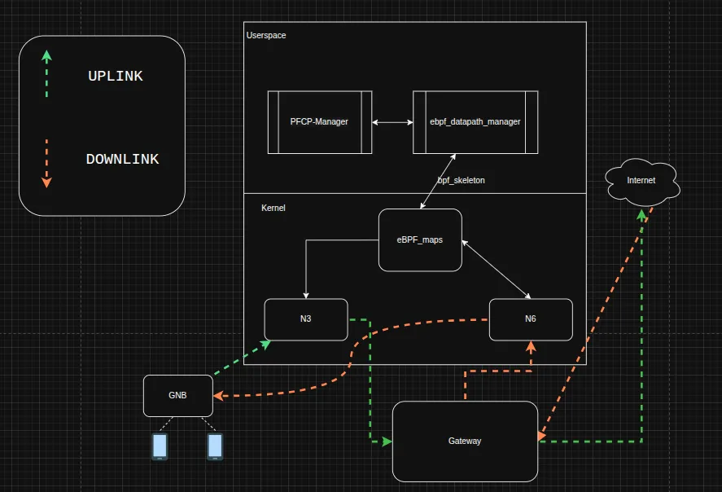
In the ever-evolving world of 5G, the User Plane Function (UPF) is the backbone of ultra-fast data delivery. But with increasing throughput, low-latency expectations, and the explosion of IoT devices, traditional kernel networking struggles to keep up. This is where the eBPF/XDP stack steps in — offering programmable, high-performance packet processing right at the NIC level.
In this blog, we’ll dive deep into:
What is XDP ?
What is the UPF(User Plane Function)?
Where Traditional UPF fall short?
DPDK UPFs — Speed with Strings Attached
eBPF/XDP UPFs
Noteworthy Open Source eBPF-Based UPF Projects
UPF Performance Comparison Summary
The Future of eBPF in 6G, AI-Native Networks.
References
Note: This blog assumes you have prior knowledge of eBPF. If you’re new to it, you can start with this beginner-friendly guide. It also helps to have some foundational understanding of 5G core architecture and networking concepts.
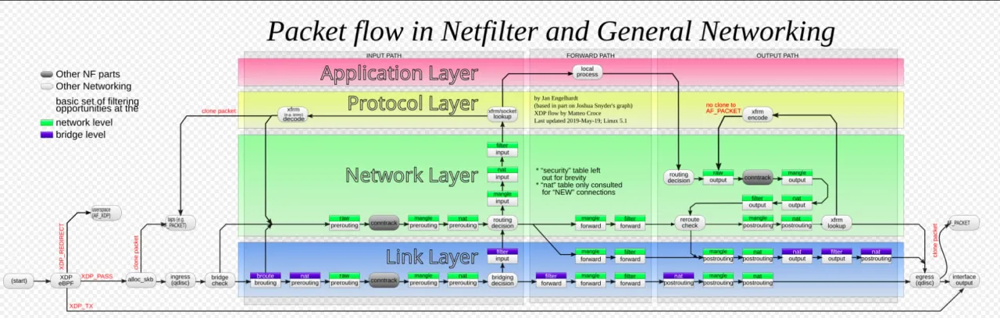
What is XDP (eXpress Data Path)?¶
The image above illustrates the complete journey of a packet as it enters, traverses, and exits the Linux kernel networking stack. It’s a layered overview that shows key processing points — and crucially, where we can intercept packets for filtering, forwarding, or dropping.
Interpreting the Packet Flow Diagram¶
This diagram breaks down into four main layers:
Link Layer (Blue): Represents early packet handling — this is where drivers hand packets over to the kernel.
Network Layer (Green): Deals with routing, connection tracking, NAT, etc.
Protocol Layer (Yellow): Handles L4-specific protocols (e.g., TCP/UDP).
Application Layer (Red): Involves sockets and user applications.
Now, look to the very left of the diagram — you’ll notice the XDP eBPF block right after the (start) point. This is where XDP hooks into the NIC driver before the packet is even handed off to the kernel via alloc_skb(). It’s the earliest and fastest possible interception point for packet processing in Linux.
This means:
The kernel hasn’t allocated memory (sk_buff) yet.
There’s no need to traverse Netfilter, iptables, or even socket buffers if you don’t want to.
XDP can redirect, drop, or pass packets with near-zero overhead.
Why This Matters¶
By working here:
You bypass costly layers like Netfilter, qdisc, and the full routing logic.
You can implement line-rate filtering, DDOS mitigation, or even user plane packet forwarding directly from the driver.
This is why eBPF/XDP-based UPFs can be orders of magnitude faster than traditional userland UPFs that rely on Kernel stack, or Netfilter hooks.
XDP Modes¶
XDP can run in several modes depending on your NIC capabilities and use case:
Native Mode (Driver Mode)
Runs directly inside the NIC driver (best performance, true zero-copy).
Performance scales with CPU cores and driver quality — not offloaded to NIC hardware.
Requires driver support (e.g., ixgbe, mlx5, virtio-net). supported_drivers_list
Generic Mode
Runs in the kernel after packet allocation (skb exists).
Slower than native, but universal — works on any interface
Offloaded Mode
Moves the eBPF program into the NIC firmware itself (for SmartNICs).
Requires NIC and firmware support But provides fastest performance
Ideal for hardware offloading and freeing up CPU
XDP Verdicts¶
Your eBPF program returns a verdict to decide what to do with the packet:
XDP_DROP: Drop the packet immediately
XDP_PASS: Let it continue into the kernel stack
XDP_REDIRECT: Redirect to another interface or AF_XDP socket
XDP_TX: Send the packet back out the same interface
XDP_ABORTED: For debugging, if the program hits a fault
Each verdict is a fast, deterministic decision, giving you granular control with minimal latency.
What’s the UPF(User Plane Function)?¶
The User Plane Function (UPF) is the heart of the 5G data plane, positioned between the RAN (gNB) and the external data network (DN). In simple terms, the UPF is a core network component responsible for handling all user data — such as internet traffic, video, and voice — that flows between your device (e.g., phone) and the outside world (like websites or streaming services). Essentially, the UPF acts as the main “traffic controller” in a 5G network, ensuring that data packets are routed quickly and efficiently to their destinations. It handles:
GTP-U tunneling/decapsulation
IP forwarding / NAT
QoS and policing
Lawful Interception
Traffic classification
Usage metering
Interaction with the SMF(Session Management Function(Control Plane))
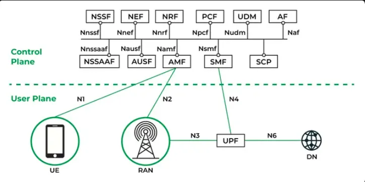
What Makes a Desired UPF in 5G/6G?¶
With the explosion of ultra-connected services — from AR/VR to autonomous cars — the User Plane Function (UPF) has become a critical element of the 5G and upcoming 6G core. A truly modern UPF must do more than just route packets — it must adapt, scale, and perform under diverse workloads.
Here are the 10 must-have characteristics of an ideal UPF:
Ultra-Low Latency (URLLC Ready)
Sub-millisecond processing required for mission-critical, real-time apps.
High Throughput
Multi-Gbps capacity with minimal per-packet overhead.
Horizontal Scalability
Easily deployable across pods/cores/edges, supporting elastic scaling in Kubernetes.
☁️ Cloud-Native Architecture
Stateless microservices, container-friendly, and CI/CD integrable.
Programmability
Dynamic insertion of policies, metering, traffic shaping, DPI, etc.
Robust Flow and Session Management
Supports GTP-U tunnels, PFCP sessions, FARs, QERs with fast table lookups.
Security + Isolation
Integrated ACLs, per-slice flow enforcement, anti-spoofing, rate-limiting.
Observability and Telemetry
Built-in tracing, flow accounting, Prometheus/Grafana-friendly.
Hardware Agnostic
Runs on general-purpose NICs; does not require SmartNICs or DPDK-only setups.
Resilient and Fault-Tolerant
Survives failovers, upgrades, and scales without packet loss.
Where Traditional UPFs Fall Short¶
Most legacy or software-based UPFs process traffic at the application layer, going through:
Full kernel stack traversal (routing, tc, Netfilter)
sk_buff allocation and copy overhead
Context switching and userspace interactions
This makes them ill-suited for high-performance requirements, especially:
URLLC: High latency due to kernel traversal
High Throughput: CPU-bound at high PPS (packets/sec)
DPDK UPFs — Speed with Strings Attached¶
DPDK was introduced to overcome kernel overheads, and indeed delivers impressive performance via:
Kernel bypass
Zero-copy memory
User-space polling However, it brings major limitations:
Hardware dependency: Requires NICs with DPDK support (e.g., vfio-pci, uio)
Poor Kubernetes compatibility: Needs pinned CPUs, hugepages, and non-standard CNI setups
Limited Observability: Doesn’t integrate well with Linux tools or eBPF observability stack
Rigid Scaling: Hardware-specific scaling bottlenecks, poor elasticity
🐝 eBPF/XDP UPFs¶
eBPF/XDP-based UPFs represent a shift toward a cloud-native, kernel-integrated dataplane that:
Delivers near-DPDK performance without hardware lock-in (XDP-native mode)
Runs in kernel, avoiding context switches, memory copy
Integrates into containerized/Kubernetes environments natively
Supports observability via BPF maps, tracepoints, and perf events
Is fully programmable using maps, helpers, and attachable programs
Scales effortlessly across nodes, cores, and interfaces
Whether it’s a 5G core on bare metal or a 6G edge cloud pod, eBPF based UPFs adapt with programmability, scalability, and performance — without compromise.
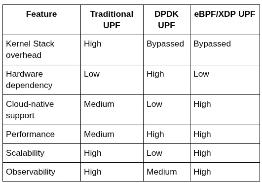
Noteworthy Open Source eBPF-Based UPF Projects¶
As 5G/6G evolves toward programmable, cloud-native cores, several community-driven projects have emerged to implement eBPF/XDP-powered UPFs. These aim to provide blazing-fast packet processing, Kubernetes-native design, and scalability.
1. eUPF — Edgecom LLC¶
Architecture:
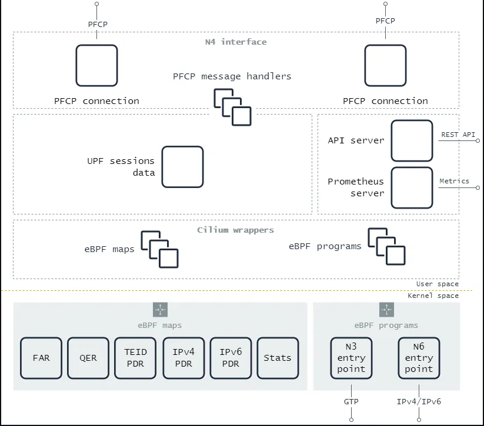
Fully kernel-resident datapath using XDP and eBPF.
Implements GTP-U encapsulation/decapsulation, Qos Parsing(QER), and PFCP message handling. Although QER ratelimiting in not yet supported.
Kubernetes-native deployment.
Code Analysis:
Written in C for eBPF datapath and Go for User plane components.
Modular design (separate PFCP agent, metrics exporter).
Supports 3GPP-compliant PFCP session management. Release 15 as of now although QER is not fully implemented.
eBPF programs are loaded and attached by User space code using Bpf2go cilium library in Golang.
Performance Metrics (from Edgecom internal benchmarks):
25 Gbps line rate per core (with Intel X550 NIC)
CPU load: ~15% at 10 Gbps (single UE, 128-byte packets)
Latency: < 150 µs RTT in loopback test
Tested with 200+ concurrent UEs in emulated lab environments
2. OAI-UPF (OpenAirInterface) — OAI 5G Core¶
Architecture:
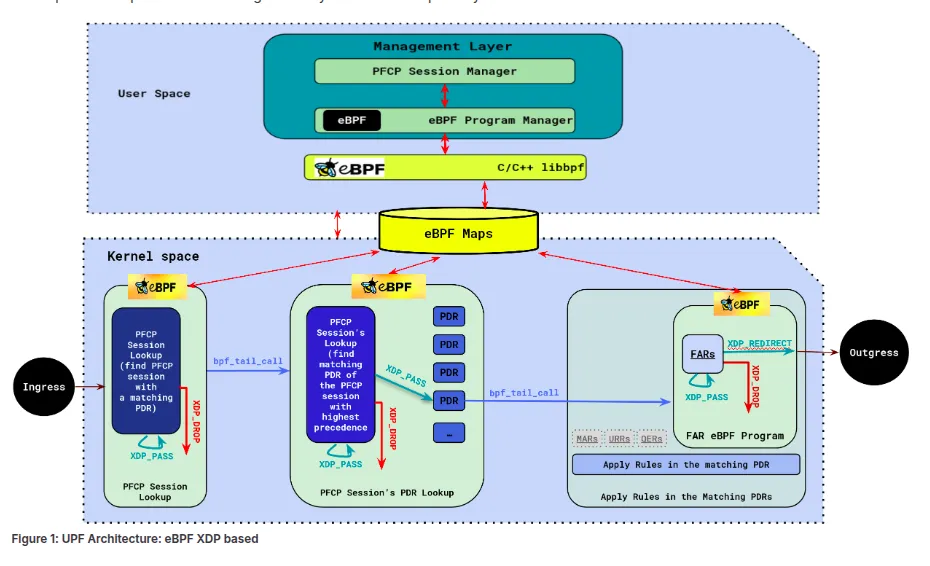
Modular architecture built around PFCP, GTP-U, and eBPF for traffic handling.
Offers both kernel and user space processing(Spgwu-tiny) with configurable paths.
Integrates tightly with OAI-AMF, OAI-SMF, and gNB simulators.
Implements eBPF acceleration primarily for GTP-U encapsulation/decapsulation.
Compatible with Docker and Kubernetes deployments for cloud-native setups.
Code Analysis:
Fully open-source, actively maintained by Eurecom and the OAI community.
Supports 3GPP-compliant PFCP session management. Release 15 as of now although QER is partiallly implemented in TC hook.
Written in CPP and C for ebpf.
eBPF programs are loaded and attached using BPF_Skeletons in CPP by User space code
3. Ella Core — Architecture and Performance Analysis¶
Architecture Overview:
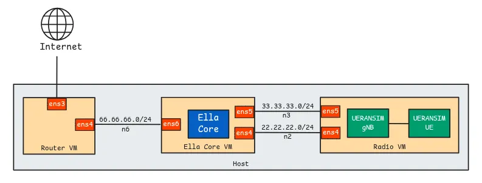
Cloud-Native, Monolithic 5g core: Ella Core is an open-source 5G Core built for private, edge, and lab deployments. Its architecture emphasizes lightweight, scalable, and cloud-native principles, enabling flexible deployment in Kubernetes and other modern environments.
Key Components:
PVC-Backed Database: Ella Core utilizes a persistent volume claim (PVC)-backed database for storing subscriber and session state, ensuring resilience and easy scaling.
TLS Offloading: Security is enhanced by offloading TLS for the Web UI and API endpoints, reducing CPU load on the core application and improving management plane responsiveness.
Data Plane: The data plane is implemented for efficient packet processing, though it does not use in-kernel XDP/eBPF for the datapath like eUPF. Instead, it operates in a virtualized environment with standard Linux networking stacks.
Deployment Environment:
Designed for virtualized environments (e.g., VMs or containers), with performance expected to improve further on bare-metal systems1.
Compatible with common 5G test tools such as UERANSIM for UE/gNB simulation1.
Code analysis:
Implements 3GPP-compliant 5G Core functions, including AMF, SMF, and UPF. Focuses on Release 16 features, with ongoing work for later releases.
Primarily written in GO but uses C for ebpf programs.
eBPF programs are loaded and attached by User space code using Bpf2go cilium library in Golang. (Same as eupf)
Performance Evaluation:
Can support up to 500 concurrent PDU sessions (limited by the simulator, not Ella Core itself). Performance_test_ellacore
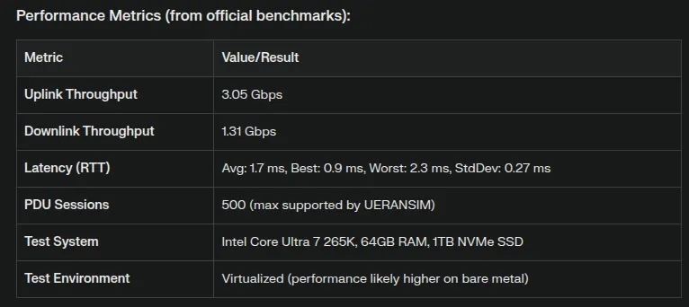
Though the performance is quite good, let’s compare eBPF-based UPF with traditional UPFs under the same configurations.
UPF Performance Comparison Summary¶
The Below Performance is measured of edgecomllc eupf compared to Open5gs-UPF , Free5gc-UPF, UPG-VPP.
The testbed is as Follows:
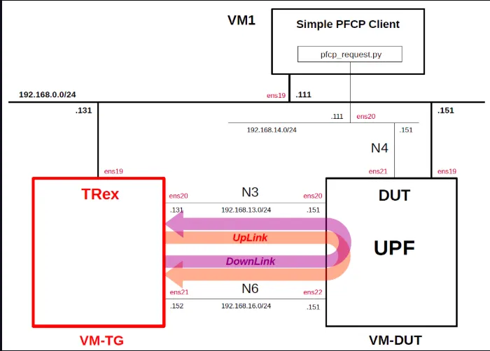
Load Measurement (1400-byte UDP payload)
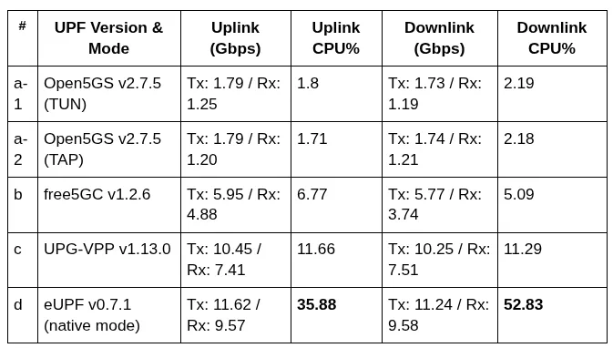
Latency Measurement (ms)
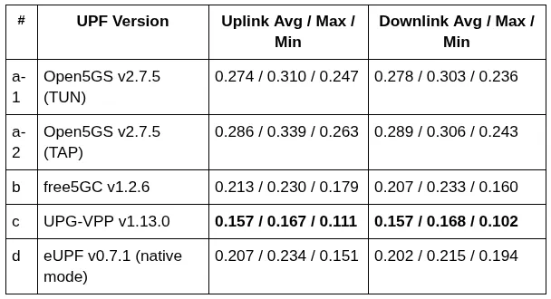
N6 Interface Raw Throughput
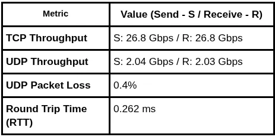
To replicate and perform these tests on your own hardware, you can follow the repository linked below.
Key Observations
eUPF (XDP-based, native mode) leads in raw throughput but at the cost of higher CPU consumption, especially for downlink. UPG-VPP shows the best latency performance, being under 0.16 ms in most measurements. Open5GS performs well for basic setups but lacks scalability. free5GC offers middle-ground performance but not close to eBPF/VPP variants. All results depend heavily on virtualization platform, NIC driver support (virtio), and test environment.
The Future of eBPF in 6G, AI-Native Networks¶
As we look ahead to the evolution from 5G to 6G, networks will demand ultra-low latency, AI-native orchestration, and extreme programmability. This is where eBPF emerges not just as a performance enhancer — but as a cornerstone of next-gen infrastructure.
In 6G, where distributed intelligence is key, eBPF can serve as an in-kernel decision engine to enforce AI-driven policies directly at the dataplane. AI-native networks will require continuous learning from traffic flows. eBPF’s hooks and real-time telemetry collection (via perf events, tracepoints, and custom maps) make it ideal for integrating with ML pipelines for self-optimizing networks. Smart NICs and DPU/XPUs are already supporting eBPF offloading. This allows pushing UPF workloads entirely onto programmable NICs, reducing CPU load and increasing energy efficiency — a critical concern for hyperscale 6G edge deployments.
References:¶
UPFs Performance Testing Repository GitHub — Simple Measurement of UPF Performance
OAI UPF (eBPF-based) GitLab — OAI 5G Core eBPF UPF Deployment Guide
OAI CN5G UPF Source Code GitLab — OpenAirInterface eBPF UPF Implementation
Ella Core eBPF-based UPF GitHub — Ella Networks Core (eBPF-powered UPF framework)
eBPF-Based User Plane Function for 5G Core Network MDPI Electronics Journal — A performance evaluation of eBPF-based UPFs
Cilium/Bpf2Go Documentation GitHub — How Bpf2Go works in Cilium (Golang integration with eBPF)